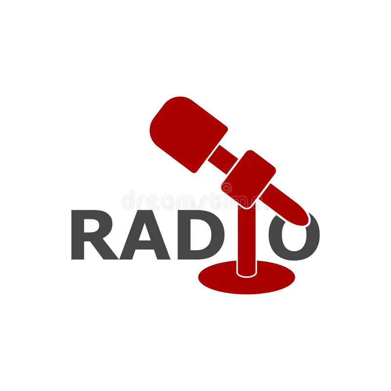

Urban Pulse
Hip-hop, rap, RnB et culture urbaine.
En direct • 24h/24
Découvre une plateforme simple pour écouter les meilleures radios, retrouver les derniers ajouts et profiter d’une interface claire, moderne et agréable.
LIVE
Une sélection pop, électro et nouveautés pour t’accompagner toute la journée.
RadioWave est un projet de site web imaginé pour centraliser plusieurs radios sur une seule interface. L’objectif est de proposer une expérience rapide, simple et visuelle, avec une navigation fluide entre les radios populaires, les nouveautés et les sélections du moment.
Accède aux radios les plus populaires en quelques secondes.
Retrouve facilement les dernières radios ajoutées au catalogue.
Un design moderne pensé pour être simple à utiliser.
Une sélection des stations les plus écoutées du moment.
Hip-hop, rap, RnB et culture urbaine.

Les incontournables pop, rock et hits légendaires.

Ambiance chill, électro et sons de soirée.
De nouvelles radios ajoutées récemment sur la plateforme.
Des titres légers et motivants pour commencer la journée.
Une sélection énergique pour les amateurs de musique électro.
Des sons calmes et posés pour se détendre à tout moment.